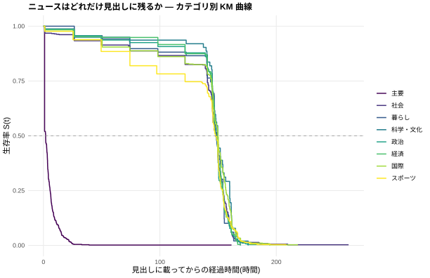

ニュースは何時間で見出しから消えるのか。NHK ニュース RSS を毎時観測し、カプラン・マイヤー推定でカテゴリ別の半減期を測る。

| カテゴリ | 半減期 | 観測見出し数 | 確定(消滅)数 |
|---|---|---|---|
| 主要 | 2.7 時間 | 283 | 276 |
| 社会 | 145.7 時間 | 250 | 136 |
| 暮らし | 98.3 時間 | 23 | 10 |
| 科学・文化 | 146.7 時間 | 27 | 12 |
| 政治 | 145.7 時間 | 151 | 60 |
| 経済 | 121.7 時間 | 97 | 55 |
| 国際 | 121.7 時間 | 218 | 134 |
| スポーツ | 97.3 時間 | 178 | 116 |
半減期 = 生存曲線の中央値。「蓄積中」は消滅イベントがまだ足りないカテゴリ。観測期間 2026-08-19 14:16:00 〜 2026-08-26 23:24:00(UTC)・スナップショット 155 回。